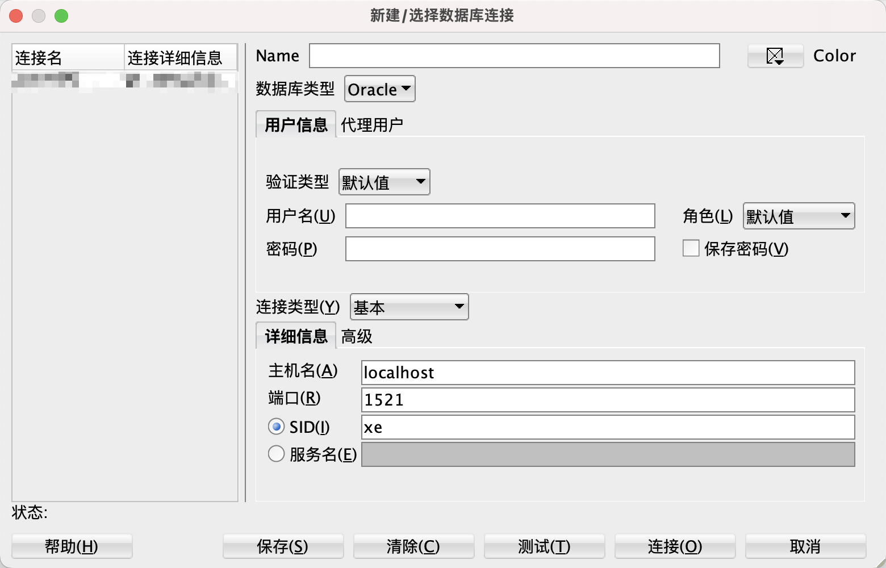

本次内容，主要面向开发，需要有一定的数据库基础知识。
涉及的内容：Oracle的基本概念，开发中常用的DDL、DML、DQL，以及PL/SQL
表空间是Oracle数据库中用于组织和管理数据的逻辑存储单位。一个表空间是一些数据文件或支持空间管理功能的磁盘区域的集合。每个表空间都有一个名字，并且可能有一些可选的特性，如用户限制、数据文件大小限制、自动扩展和备份等。
表空间是Oracle中的重要概念，它决定了数据库中数据的存储方式和管理方式。表空间可包含多个数据文件，每个数据文件只属于一个表空间。当一个表、索引或其他数据库对象被创建时，它们将被分配到某个表空间中并使用表空间中的数据文件来存储数据。
SID是Oracle实例的唯一标识符，它代表着一个Oracle数据库实例。在连接到Oracle数据库时，客户端需要提供一个SID来标识要连接的Oracle实例。SID通常由三个到八个字符组成，并且是在安装Oracle实例时指定的。
服务名是在Oracle网络环境中定义的一个数据库或应用程序的名称。服务名通常比SID更具有描述性和可读性，并且可以很容易地被管理员进行配置和管理。服务名可以指向多个Oracle实例，实现负载均衡。
服务名比SID更具有灵活性、可管理性和容错性。在连接Oracle数据库时，建议使用服务名来代替SID。
Oracle SQL Developer是一个免费的集成开发环境，简化了传统和云部署中Oracle数据库的开发和管理。
SQL Developer为您的PL/SQL应用程序提供完整的端到端开发，用于运行查询和脚本的工作表，用于管理数据库的DBA控制台，报告界面，完整的数据建模解决方案，以及用于将第三方数据库移动到甲骨文的迁移平台。
下载地址：Oracle SQL Developer Downloads

SID连接方式，使用以下URL格式进行连接：
jdbc:oracle:thin:@host:port:SID
host和port分别代表数据库服务器的地址和端口号，SID是数据库实例的唯标识符。
service_name连接方式，使用以下URL格式进行连接：
jdbc:oracle:thin:@//host:port/service_name
host和port分别代表数据库服务器的地址和端口号，service_name是数据库实例的服务名。
NUMBER(p, s)
NUMBER数据类型具有精度 p 和小数位数 s。
精度(p)是数字中的总位数，范围从 1 到 38。
小数位数(s)是数字中小数点右侧的位数，范围从 -84 到 127。
可存储数字范围：
例如，数字 1234.56 的精度为 6，小数位数为 2。存储此数字需要 NUMBER(6,2)
| 示例 | 说明 |
|---|---|
NUMBER(p) | 表示精度为p、小数位数为0的整数 例： NUMBER(2)，可存储-99~99如果存储的数字超过精度 p，Oracle 将发出错误 例： NUMBER(2)，存储100，报错ORA-01438: 值大于为此列指定的允许精度 |
NUMBER | 等同于NUMBER(38) |
INTINTEGER | 别名，等同于NUMBER(38) |
NUMBER(p, s) | 表示精度为p、小数位数为s的数字 例： NUMBER(3, 2)，可存储-9.99~9.99如果存储的数字超过小数位数 s，Oracle 将对该值进行四舍五入 例： NUMBER(3, 2)，存储1.234，实际值为1.23，存储1.236，实际值为1.24小数位数为负数，则会将小数点左侧的数值舍入。 例： NUMBER(3, -1)，存储111，实际值为110 |
DECIMAL(p,s) | 别名，等同于NUMBER(p,s) |
NUMBER数据类型，不支持无符号设置，可以通过约束限制，达到类似的结果。
41CREATE TABLE mytable (2 id NUMBER(2) NOT NULL,3 CONSTRAINT chk_unsigned CHECK (id >= 0)4);固定长度的字符串，可存储大小为 1 到 2000 字节。
如果存储的值的长度小于定义的长度，Oracle 会将字符串的后方填充空格到最大长度。
如果插入的值长度大于列，Oracle 将返回错误。
31-- 以字节或字符为单位指定字符串长度。2CHAR(length BYTE)3CHAR(length CHAR) -- UTF8字符集在安装 Oracle 数据库时，如果没有进行字符集设置，Oracle 将使用系统默认字符集。
需要注意的是，在实际应用中，建议尽量使用 UTF-8 字符集，因为它是一种通用的字符集，可以支持几乎所有的语言和字符。同时，它也是 Oracle 公司推荐的字符集。
在 Oracle 中，可以使用以下两种方式来查看字符集：
查看数据库字符集：
11SELECT VALUE FROM NLS_DATABASE_PARAMETERS WHERE PARAMETER='NLS_CHARACTERSET';这条语句将返回数据库的字符集。如果没有指定字符集，Oracle 将使用系统默认的字符集。
查看会话字符集：
11SELECT VALUE FROM NLS_SESSION_PARAMETERS WHERE PARAMETER='NLS_CHARACTERSET';这条语句将返回当前会话使用的字符集。如果没有显式地指定字符集，Oracle 将使用数据库字符集作为会话字符集。
| 示例 | 说明 |
|---|---|
CHAR(length) | 等同于CHAR(length BYTE)例： CHAR(2)，‘11’可以存储，‘中’不可以存储例： CHAR(3)，‘111’，‘中’可以存储UTF-8是一种1～4字节的变长编码 |
CHAR | 等同于CHAR(1 BYTE) |
CHAR(length CHAR) | 例：CHAR(2 CHAR)，‘11’，‘中文’都可以存储 |
可变长度的字符串，可以存储范围为 1 到 4000 字节。
31-- 以字节或字符为单位指定字符串长度。2VARCHAR2(max_size BYTE)3VARCHAR2(max_size CHAR)NCHAR是一种固定长度的Unicode字符集字符串数据类型。
与CHAR数据类型类似，NCHAR数据类型中的字符必须具有相同的大小和空间限制。
不同之处在于，NCHAR数据类型存储的是Unicode字符，而CHAR存储的是单字节字符。
NCHAR数据类型可以存储从0到2000个字符，其中每个字符占用2个字节。
因此，如果列被定义为NCHAR(100)，该列将占用200字节的存储空间。
在创建一个包含NCHAR列的表时，需要指定列的长度，如下所示：
81CREATE TABLE mytable (2 mycolumn NCHAR(100)3);4-- 需要注意的是，如果要使用NCHAR数据类型存储数据，必须在列名前面添加“N”前缀。5-- 这是因为默认情况下Oracle将字符作为单字节编码而不是编码，添加“N”前缀可以告诉Oracle使用Unicode编码。6INSERT INTO mytable(mycolumn) VALUES (N'Unicode字符串');7-- 需要使用Unicode字符集编码的字符串和“N”前缀来进行匹配8SELECT * FROM mytable WHERE mycolumn = N'Unicode字符串';NVARCHAR2是一种Unicode字符集的可变长度字符串数据类型。
每个字符都可以存储在1到4个字节之间，具体取决于所使用的字符集和编码方式。NVARCHAR2的最大长度是4,000个字符。
NVARCHAR2数据类型可以在不同的语言之间传递数据，例如在国际化的应用程序中。它支持所有的Unicode字符集，包括UTF-8和UTF-16。
在创建一个包含NVARCHAR2列的表时，需要指定列的最大长度，如下所示：
51CREATE TABLE mytable (2 mycolumn NVARCHAR2(100)3);4INSERT INTO mytable(mycolumn) VALUES (N'Unicode字符串');5SELECT * FROM mytable WHERE mycolumn = N'Unicode字符串';DATE数据类型包含日期和时间的值，精度到秒。
41-- 当前系统时间2SELECT SYSDATE FROM DUAL;3-- 格式化日期，返回日期字符串4SELECT TO_CHAR(SYSDATE, 'YYYY-MM-DD HH24:MI:SS') FROM DUAL;数据定义语言（Data Definition Language），用于创建、修改和删除数据库对象，如表、视图、索引、序列等。DDL语言可以用于定义数据库模式、约束和访问权限。
xxxxxxxxxx111CREATE TABLE table_name (2 column_1 data_type column_constraint,3 column_2 data_type column_constraint,4 ...5 table_constraint6 );7-- 基于查询结果，创建表，包含查询数据，不包含原表的主键、约束、默认值8-- 主要充当一个数据备份表9CREATE TABLE TEST AS10SELECT *11FROM TEST;CREATE GLOBAL TEMPORARY TABLE是Oracle中创建全局临时表的语法。它可以创建一个全局共享的临时表，存储的数据只在当前事务或会话中可见，在会话结束前数据保留，但在事务结束后被自动清空。语法如下：
xxxxxxxxxx81CREATE GLOBAL TEMPORARY TABLE table_name (2 column_1 datatype [(size)] [DEFAULT default_value],3 column_2 datatype [(size)] [DEFAULT default_value],4 .5 .6 column_n datatype [(size)] [DEFAULT default_value]7)8[ON COMMIT {DELETE | PRESERVE} ROWS]其中，table_name是要创建的临时表的名称，column_1，column_2，... column_n 是要创建的临表中的列名和数据类型。ON COMMIT字句是可选的，指定在何时清空临时表数据。
如果指定了ON COMMIT DELETE ROWS，那么在事务提交或回滚时，临时表的数据被自动清空。如果指定了ON COMMIT PRESERVE ROWS，那么在事务提交时，临时表的数据被自动清空，但在事务回滚时，临时表的数据会保留。
xxxxxxxxxx51CREATE [OR REPLACE] VIEW view_name [(column_aliases)] AS2 defining-query3-- 可防止通过视图进行更改基础表4[WITH READ ONLY] 5[WITH CHECK OPTION]物化视图是一种包含预先计算的数据结果的表，可以通过定期刷新或即时查询来更新数据，从而提高查询性能和响应速度。
与普通视图不同的是，物化视图会在计算结果后将结果存储在磁盘上，因此在查询时无需重复计算。在数据量很大且查询复杂的情况下特别有用。
在Oracle中，可以使用以下语法创建物化视图：
xxxxxxxxxx111CREATE MATERIALIZED VIEW view_name 2[ PCTFREE integer ]3[ PCTUSED integer ]4[ INITRANS integer ]5[ MAXTRANS integer ]6[ TABLESPACE tablespace_name ]7[ STORAGTE (subclause) ]8BUILD [ IMMEDIATE|DEFERRED ]9REFRESH [FAST|COMPLETE|FORCE]10[ON [COMMIT|DEMAND] [PRESERVE ROWS|DELETE ROWS] [WITH PRIMARY KEY] ]11AS query;其中，view_name表示要创建的物化视图的名称，query是查询语句，用于指定物化视图所包含的数据。其他各个参数则用于配置物化视图的不同属性。例如：
BUILD IMMEDIATE表示在创建物化视图的同时，立即将数据写入物化视图中
REFRESH用于指定如何刷新物化视图。FAST表示增量刷新物化视图，COMPLETE表示完全刷新物化视图，FORCE表示刷新物化视图时强制使用指定的刷新方法
ON COMMIT用于指定当发生事务提交时如何维护物化视图。可以指定为PRESERVE ROWS表示保留物化视图中对应的行，或者DELETE ROWS表示删除物化视图中对应的行。
WITH PRIMARY KEY表示为物化视图创建主键。
x1CREATE SEQUENCE TEST_SEQUENCE --序列名2 INCREMENT BY 1 -- 每次加几个3 START WITH 10000 -- 从1开始计数4 NOMAXVALUE -- 不设置最大值5 NOCYCLE -- 一直累加，不循环6 CACHE 10;7 8ALTER SEQUENCE 序列名 INCREMENT BY 递增值;9
10-- 查询序列的下一个可用值11SELECT 序列名.NEXTVAL FROM DUAL;12-- 重复查询序列的当前值13SELECT 序列名.CURRVAL FROM DUAL;14-- 递归获取序列的可用值15SELECT 序列名.NEXTVAL16FROM DUAL17CONNECT BY LEVEL <= 5;示例：
xxxxxxxxxx101CREATE TABLE items(2 item_id NUMBER3);4
5INSERT INTO items(item_id) VALUES(item_seq.NEXTVAL);6INSERT INTO items(item_id) VALUES(item_seq.NEXTVAL);7
8COMMIT;9
10SELECT item_id FROM items;在 Oracle 中，索引名需要唯一。如果尝试为已存在的索引分配相同的名字，将会出现命名冲突错误。
可以使用以下语法为索引指定名称：
xxxxxxxxxx21CREATE [UNIQUE] INDEX index_name2ON table_name (column1, column2, ...);index_name 是指定的索引名称，table_name 是所要创建索引的表，column1, column2, ... 是指定列。
数据查询语言（Data Query Language），用于查询数据库中存储的数据，并从中检索所需信息的语言。DQL通常用于SELECT语句中，通过指定表名、列名、条件和排序方式等来查询和筛选数据。常见的DQL命令包括SELECT、FROM、WHERE、GROUP BY、HAVING、ORDER BY等。
数据操作语言（Data Manipulation Language），用于添加、修改和删除数据库中记录的语言。DML通常使用INSERT、UPDATE和DELETE语句，分别用于将新记录插入到数据库表中、更新表中现有的记录和删除表中的记录。DML命令不仅能够操作数据，还可以控制数据库的事务处理，例如设置提交和回滚点等。